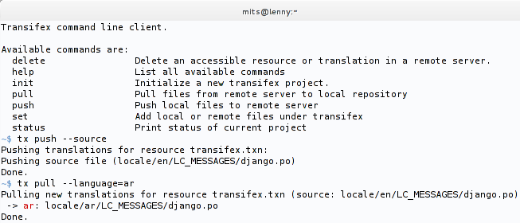
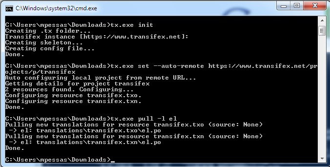

For the most up-to-date information, please refer to Transifex.com and support.transifex.com.
Transifex Client v0.8¶
Note
This page describes Transifex Client v0.8. There are also docs for the development version and older releases.
- Released:
- 26 June 2012
The Transifex Command-line Client is a command line tool that enables you to easily manage your translations within a project without the need of an elaborate UI system.
You can use the command-line client to easily create new resources, map locale files to translations and synchronize your Transifex project with your local repository and vice verca. Translators and localization managers can also use it to handle large volumes of translation files easily and without much hassle.
If your distribution or operating system does not include a package for transifex-client, please refer to the section Getting the client.
Notice: This version of Transifex Client is fully compatible with Transifex.com and requires Transifex 1.2.
Using the client¶
To make sure that transifex-client was installed correctly, try running it with the following command:
tx --help
If everything was completed, then you should see a brief help message and basic instructions on how to use the tool. You can also view the available commands by running:
tx help
To get more information for each command you can use tx help *command*.
Command list¶
A brief introduction to the most commonly used commands provided by transifex-client follows.
init¶
The tx init command is used to initialize a project.
This is very similar to the way most VCS systems treat the init command. Use this command to create a new project in the current directory. This way you will be able to manage all translation files of the project that exist under the project’s root directory.
Here’s a sample run:
$ tx init
Creating .tx folder...
Transifex instance [https://www.transifex.com]:
Creating skeleton...
Creating config file...
No configuration file found.
No entry found for host https://www.transifex.com. Creating...
Please enter your transifex username: user
Password: <...>
Updating /home/username/.transifexrc file...
Done.
Note
It is safer to use encrypted http instead of plain http in order to avoid having your user credentials crossing the wire out in the open. Make sure that you use https over http whenever it is available.
If you are using the client against the Transifex.com servers, the client will ask for your permission to change any http URLs to https ones.
Where to run init from¶
You may run this command from anywhere on your filesystem. It will basically create a small file which stores the mapping between your local files and Transifex resources.
If you have a software project in VCS and would like to commit this config file, in order to make it available to anyone who clones your repository, run the command in the root directory of your repo.
You might be managing multiple projects and would like a single configuration file. This is common with translators, who use the client to manage their contributions across projects. In this case, you may run this command outside of the git repos.
Note
If you want to automate the project initialization, the init command offers some options to set the default host, username and password so that you can use it with non-interactive scripts. For more info check the help page of the command ('tx help init').
set¶
tx set [options]
This command is an aggregation of all functions needed to initialize and setup a local Tx project either with by using local files or remote files directly from the Transifex server.
auto-remote¶
tx set --auto-remote <url>
The command above can be used to initialize a local project for the remote Project, Release or Resource specified by the url. Then you can pull or push translation files from and to the server as usual. The supported urls are the following:
| Type | URL | Description |
|---|---|---|
| Resource | https://www.transifex.com/projects/p/transifex/resource/txo/ | Set up a single resource. |
| Project | https://www.transifex.com/projects/p/transifex/ | Set up all resources under this project. |
| Release | https://www.transifex.com/projects/p/transifex/r/tx-1_0/ | Set up all resources belonging to this release. |
The above URLs are for the Transifex project itself. You will have to replace transifex, txo and tx-1_0 for your project.
auto-local¶
tx set --auto-local -r <project.resource> '<expr>' --source-lang en [--source-file <file>]
This command can be used to automatically initialize a Tx project by using local files. The project must already exist on the Transifex server, so if you haven’t already created it, login to the web interface and do so.
- project.resource: Your project and resource ‘slugs’, separated by a dot. These are the strings found on your project’s URL and together they uniquely identify your translatable resource. For example, if you have a URL such as www.transifex.com/projects/p/myproject/resource/myresource/, the unique slug will be “myproject.myresource”.
- source_lang: This is the source language of your resource, such as ‘en’ for English. This is the language you selected, when you created your project at Transifex.
- expr: An expression which reflects the file/directory structure of your translation files. The expression must be in quotes and contain the '<lang>' keyword, denoting where the file paths differentiate per language, for example: translations/po/<lang>.po.
- If your source file doesn’t follow that schema, you can specify a custom path for the source file using the '--source-file file' option.
For instance, let’s say you have a class open-source git-hosted Gettext-i18nized project. Here’s a set of commands you might use to create a resource off your master branch:
$ git clone http://git.example.com/git/myproject.git
$ cd myproject
$ tx init
$ tx set --auto-local -r myproject.master 'po/<lang>.po' --source-lang en \
--source-file po/myproject.pot
$ tx push -s -t
Pushing 'el' translations (file: po/el.po)
Pushing 'gu' translations (file: po/gu.po)
Pushing 'mr' translations (file: po/mr.po)
There is no requirement for your pot file name to match your resource name, but the consistency might benefit others who come along later.
Depending on your project, you might have multiple resource and source files. You can use a handy script to set everything up in one pass, for example:
for resource in calendar contacts core files media gallery settings; do
tx set --auto-local -r myproject.$resource "<lang>/$resource.po" \
--source-language=en \
--source-file "templates/$resource.pot" --execute
done
Note
Keep in mind that the --auto-local option overwrites your existing .tx/config file.
Other set commands¶
tx set --source -r <project.resource> -l <lang> <file>
This command simply sets the source file and the source language of a specific resource. It can be used to initialize new resources or update existing ones.
tx set -r <project.resource> -l <lang> <file>
This command can be used to set individual translation files mapped to a certain language. This is useful when your translation files don’t use a common naming schema and the --auto-local command cannot be used.
You can also use the set command to set the type of each resource with the -t or --type option. For example, the command
tx set -t PO -r project.resource
would set the type of the resource project.resource to PO and the command
tx set -t PO
would set the type of all resources in your project to PO.
Of course, you can use the -t option in combination with the --auto-local option, too.
See the section Defining the resource type for details about the type of a resource.
Furthermore, the set command has a minimum-perc option, which you can set the minimum percentage option, either globally or for a specific resource of your project with. The value of this option specifies the minimum percentage a translation of a resource must be completed in a language in order to download it.
Similarly, it has a mode option to define the mode for the downloaded files.
status¶
tx status
This is a simple command that displays the existing project configuration in a more human readable format. It lists all resources that have been initialized under the local project and all their associated translation files.
Sample output:
$ tx status
myproject -> default (1 of 1)
Translation Files:
- en: po/smolt.pot (source)
- ar: po/ar.po
- as: po/as.po
- bg: po/bg.po
- bn_IN: po/bn_IN.p
...
push¶
tx push
This command sends local changes to the Transifex server. If you have added new source files, the corresponding resources are created on the Transifex server and, if you have new translations, those will get pushed as well. This can also be used to update existing source files or translations on the server with new strings.
When pushing source files, Transifex will update the source strings of a resource to match those from the new source file. This operation may result in loss of information, so please pay extra attention when pushing a source file. This is the reason why --source isn’t enabled by default.
Here’s how differences between the old and new source files will be handled:
- New strings will be added.
- Modified strings will be considered new ones and added as well.
- Strings which do not exist in the new source file (including ones which have been modified) will be removed from the database, along with their translations.
Keep in mind, however, that old translations are kept in the Translation Memory of your project.
Additional options for the tx push command are:
- -l <lang> - Specify which translations you want to push (defaults to all)
- -r <resource> - Specify the resource for which you want to push the translations (defaults to all)
- -f - Push source files without checking modification times
- --skip - Don’t stop on errors. Useful when pushing many files concurrently.
- -s - Push the source file to the server
- -t - Push the translation files to the server
- --no-interactive - Don’t require user input when forcing a push
- -h - Shows the help screen for the command
Note
By default, Transifex will try to guess when the pushed files are not changed and it will skip them. To force the push operation, you should use the --force option.
pull¶
tx pull
This command updates your local files by pulling the latest translations from the server as well as new translation files that were created in the Transifex UI. By default, this command will check if the modification time of your local files is more recent than that on the Transifex server and will not overwrite newer files. If you want to force the download of specific files, use the --force option.
Additional options for the tx pull command are:
- -l <lang> - Specify which translations you want to pull (defaults to all)
- -r <resource> - Specify the resource for which you want to pull the translations (defaults to all)
- -a - Fetch all translation files from server (even new ones)
- -s - Force the fetching of the source file (default: False)
- -f - Force download of translations files
- --skip - Don’t stop on errors. Useful when pushing many files concurrently.
- --disable-overwrite - By default Transifex will fetch new translations files and replace existing ones. Use this flag if you want to disable this feature.
- -h - Shows the help screen for the command
- --mode - Specify the mode of the translation that is needed. See Defining the mode of the translated file for details.
Configuration files¶
Configuration options for Transifex Client follow standard UNIX practices, also adopted by Version Control System tools. The configuration files the transifex-client is using are simple text files that you can edit by hand. In this section, we will go over the structure of each configuration file, so that if you need to edit a file by hand, you’ll know what to look for.
The transifex-client is using two basic configuration files.
transifexrc¶
~/.transifexrc is unique per user and stores the hostname, username and password for every Transifex server that you are using. It is stored in the user’s home directory.
[https://www.transifex.com]
username = user
token =
password = p@ssw0rd
hostname = https://www.transifex.com
[https://myproject.transifex.com]
username = user2
token =
password = p@ssw0rd2
hostname = https://myproject.transifex.com
If you change your password on a Transifex server for example, you should edit this file with the new password. The token variable should be left blank.
txconfig¶
transifex-client also uses a per project configuration file to store the project’s details and the file-to-resource mappings. This file is stored in .tx/config of your project’s root directory. It has the following outline:
[main]
host = https://www.transifex.com
[project_slug.resource_slug]
file_filter = po/<lang>.po
source_file = po/myproj.pot
source_lang = en
trans.fi = translations/fi/LC_MESSAGES/django.po
type = PO
A quick rundown of the sections and options appearing in the config file follows.
[main] section
In this section we have project-wide options, such as the default transifex host for all projects. These can be overriden by each resource, in case it is needed.
[project_slug.resource_slug]
- source_lang: this is the source language of the resource.
- source_file: this points to the source file directly.
- file_filter: here we hold the expression used to identify translation files under the specific project. [not mandatory]
- trans.<lang>: this is used for translation files that don’t follow a common naming schema and the file expression cannot be used to track them. [not mandatory]
- host: in case the project doesn’t use the default Transifex server as specified in the [main] section, it can override it using this option. [not mandatory]
So if you ever need to change the language of a file or correct the file path for a specific translation, you can edit this file directly.
Apart from the above options, the following options are supported, too, either at the main section or the resource section.
- type: The i18n type of the resource. See section Defining the resource type.
- minimum_perc: The minimum percentage a translation must be completed up to for the client to consider, whether it should pull it or not.
Warning
Transifex does not offer a way to revert your config configuration back after some unsuccessful changes. So, make sure you backup the original file before editing by hand.
Defining the resource type¶
Transifex natively supports a number of user-formats file formats, also referred to as resource types. While Transifex does its best to guess your file type based on the file extension and contents, it ultimately requires you to define the resource type.
In the client, this is configured with the line ‘type=’ in the config file:
$ cat .tx/config
[myproject.myresource]
file_filter = locale/<lang>.po
source_file = locale/en_GB.po
source_lang = en_GB
type = PO
For a list of the available resource types, please refer to user-formats.
Defining the mode of the translated file¶
Transifex is able to generate different versions of the translation files. For instance, a developer might be interested in files with only reviewed translations or wants a version of the translation file that is suitable for his project. These versions are called modes. Users can specify the mode of the file they want to download with the --mode option of the pull command.
Currently, the available modes are:
- reviewed, for files having only reviewed translations.
- translator, for files that are suitable for off-line translation of the resource.
- developer, for files that are suitable to be used by developers in their source code tree.
Customizing the language mappings¶
Transifex by default uses certain language codes as they’re described by ISO 639-1. Since a lot of projects have their own mappings and are using different language codes than the ones described by the ISO standard, the transifex-client offers a quick and easy way to setup your custom one-to-one language mappings.
In order to setup a custom language mapping, you need to edit the .tx/config file by hand and add a lang_map section containing a comma separated list of language mappings in the following way:
lang_map = REMOTE_CODE:LOCAL_CODE
An example of a real language mapping is the following:
lang_map = el: el_GR, sr@latin:sr_latin
Furthermore, you can combine global mappings, which apply to all resources and are placed in the [main] section of your configuration file, with resource specific language mappings, which extend the global mapping with the local ones. A sample config file follows:
[main]
host = https://www.transifex.com
lang_map = el: el-GR, de: de-DE
[foo.bar]
file_filter = translations/foo.bar/<lang>.po
source_lang = en
lang_map = fr: fr-FR
[foo.bar2]
file_filter = translations/foo.bar2/<lang>.po
host = http://localhost:8000
source_lang = en
lang_map = el: el_GR, ja: ja-JP
Note
The language mapping supports only one-to-one relations and it will not work with many-to-one setups.
For example, given the above configuration, one would pull the Greek translations with the command
tx pull -l el
Managing your project¶
For information regarding projects and what they represent, check the appropriate documentation.
Creating a project¶
Currently, the client doesn’t support creating a project directly from the command line. So, you first have to visit the project creation page at Transifex and fill out the corresponding form. Once you have created your project, the only thing you need is the project slug. This is part of the project details page URL (usually it is in the following format: https://www.transifex.com/projects/p/<project_url>/).
Once you have a project created on the Transifex site, go into your project’s root directory and run the tx init command. This will initialize your local project and will create all necessary configuration files. Once this is finished you are ready to go on to the next step....
Managing your translations¶
Automatic setup¶
Transifex-client offers a smart and easy way to automatically setup and track your translation files provided that all of them have a common naming schema. If for example, you have all translation files under a directory structure similar to this:
po/en.po
po/de.po
po/el.po
po/fi.po
po/ar.po
then, you could use an expression to group them together like 'po/<lang>.po.
The transifex-client can keep track of multiple files by using expressions like the one above with the special keyword <lang>. This keyword denotes where the language code is specified in the file path. So, in order to quickly setup your project, you just issue the following command:
tx set -r <project_slug>.<resource_slug> -s en 'po/<lang>.po'
Even if you’re using separate source files for translations (for example, POT based projects) you can specify the source file on the command above using the -f <file> option like this:
tx set -r <project_slug>.<resource_slug> -s en -f <file> 'po/<lang>.po'
After that, you should have the translation files of your project under tx management. The benefits of this approach compared to handling one by one the translation files is that you can add/remove files dynamically without having to edit the configuration files of transifex-client. Also, the file pattern provides an easy way for transifex-client to guess, where new translations should be saved when downloaded from the server.
Note
Even if you’re using the automatic way of setting up your project, you can setup specific translation files that don’t match the global expression as exceptions by using the manual way to setup translation files. This is described in the next part.
Manual setup¶
In most cases, the automatic setup procedures should cover most scenarios but there are always people who prefer to do it the hard way. The transifex-client offers a way to use static mapping between locales and files, which may be what you need, if your translation files don’t share a common naming scheme.
So, in order to setup your project, you first need to create a resource with an assigned source file. To do this, you should run the following command:
tx set --source -r <project_slug>.<resource_slug> -l <language> source_file
Note
The resource name cannot contain special characters. The only valid characters are alphanumeric, the hyphen and the underscore.
Once you have created a mapping between a source file and a resource, you should add more translations to this resource. To do this simply run the following for every language:
tx set -r <project_slug>.<resource_slug> -l <language> translation_file
After doing this for all available languages, you can check the existing mapping using the tx status command.
Look also at the multiple POT case example for how to manually setup your project in case it uses multiple pot files.
Pull/Push¶
When you are sure that the mapping is correct, you can push your files to the Transifex server using the tx push command. The first time you push a project to Transifex you should use the -s|--source flag with the push command, in order to push the source file. If you want to push the translation files as well, you should use the -t|--translations in addition to the -s flag. By using the -s flag, the Transifex server will create a corresponding resource to each pushed source file, if one does not exist on the server. On consecutive pushes, you may omit this flag and only include it whenever you want to update the source strings of your resource.
Note
In case the resource does not already exist in Transifex, you should set the option type in your .tx/config file to denote the type of resource you have. This option can go either in the main section of the file (so that it applies to all resources) or in the section of the resource.
Whenever you have done some work in the online translation editor on Transifex (lotte) and you want to incorporate those changes back into your project, you can simply run tx pull. If you also want to pull new translation files, you can add the '-a|--all' flag to the pull command. You should keep in mind, however, that if you have not setup your project by using a file expression, you need to move and track the new translation files manually after downloading them.
If you are interested in only a subset of the available resources of your project, you can use the -r/--resource option to push/pull files only for the specific (comma-separated) resources. You can also use Unix shell-style wildcards to easily select multiple resources.
Additionally, there is an option to work only on specific (comma-separated) languages, the -l/--language option.
Note
Depending on the size of the files and the number of languages, this process can take up to several minutes, as it requires uploading all files, parsing them, extracting the available strings and storing them into the database. To avoid misuse of the API, we have some throttling mechanisms in play. These should not interfere with your work. However, just to be safe, whenever pushing or pulling to/from the Transifex server, if you want a specific resource or language use the -r/--resource and -l/--language options of the push/pull commands to avoid pushing/pulling all of the tracked files.
Delete¶
Transifex-client is also able to delete translations for a resource. The delete command supports deleting both specific translations of a resource as well as all the whole resource.
When the user wants to delete a specific translation and there is a team for the language or the translation is not empty, then the delete command only displays a warning, instructing the user to use the -f option, should he want to actually delete the translation.
In the case of deleting a whole resource which has translations, the user must again use the -f option to force the deletion of the resource. Otherwise, only a warning is displayed.
Sample Usage¶
For Developers¶
Let’s assume you are the maintainer of the Transifex project itself, and you want to setup your project to use Transifex for translations. First of all, navigate to your project’s main directory, such as your VCS directory root. Then, issue the following command:
[user@host:~/transifex]$ tx init
Creating .tx folder...
Transifex instance [https://www.transifex.com]:
Creating skeleton...
Creating config file...
No configuration file found.
No entry found for host https://www.transifex.com. Creating...
Please enter your transifex username: user
Password:
Updating /home/user/.transifexrc file...
Done.
To ask Transifex to detect your files automatically, run the following command:
[user@host:~/transifex]$ tx set --auto-local -r transifex.txo -s en 'po/<lang>.po'
Only printing the commands which will be run if the --execute switch is specified.
tx set --source -r transifex.txo -l en po/en.po
tx set -r transifex.txo -l bal po/bal.po
tx set -r transifex.txo -l bn_IN po/bn_IN.po
tx set -r transifex.txo -l ca po/ca.po
tx set -r transifex.txo -l cs po/cs.po
tx set -r transifex.txo -l da po/da.po
...
Done.
If everything looks good, issue the command again with the --execute switch:
[user@host:~/transifex]$ tx set --auto-local -r transifex.txo -s en 'po/<lang>.po' --execute
Updating source for resource transifex.txo ( en -> po/en.po ).
Setting source file for resource transifex.txo ( en -> po/en.po ).
Updating file expression for resource transifex.txo ( po/<lang>.po ).
Done.
Finally, here’s a sample run with manual mapping of your files:
[user@host:~/transifex]$ tx --traceback set --source -r transifex.txo -l en po/en.po
Setting source file for resource transifex.txo ( en -> po/en.po ).
Done.
[user@host:~/transifex]$ tx --traceback set -r transifex.txo -l el po/el.po
Updating translations for resource transifex.txo ( el -> po/el.po ).
Done.
After that, once your mapping is done, you can push or pull freely to the Transifex server. If it is the first time you are setting up your project, you should probably push your files to the Transifex server with the following command:
[user@host:~/transifex]$ tx push --source --translations
Pushing translations for resource transifex.txo:
Pushing source file (po/en.po)
Pushing 'el' translation (file: po/el.po).
Pushing 'hu' translation (file: po/hu.po).
Pushing 'zh_TW' translation (file: po/zh_TW.po).
...
Pushing 'te' translations (file: po/te.po)
Pushing 'pl' translations (file: po/pl.po)
Done.
Then, you can visit the Transifex server and view the available translations from the web UI. Let’s say, you translate your project into more languages and just before the new release, you want to update the translations. In that case, this is what you should do:
[user@host:~/transifex]$ tx pull -a
Pulling translations for resource transifex.txo (source:
po/en.po)
New translations found for the following languages: nb, tg, xh
Pulling 'el' translation (file: po/el.po).
Pulling 'hu' translation (file: po/hu.po).
Pulling 'zh_TW' translation (file: po/zh_TW.po).
Pulling 'bn_IN' translation (file: po/bn_IN.po).
...
Pulling 'te' translation (file: po/te.po).
Pulling 'pl' translation (file: po/pl.po).
Pulling new translations for source file po/en.po
-> nb: ./po/nb.po
Done.
Notice the ‘nb’ language: the new translation file is now managed by Transifex, which means that in subsequent pushes/pulls this will be updated as well.
Keep in mind that, in case your project uses multiple POT files (or any other kind of file), each POT file will become a separate resource. If they are two, just run two set commands. With the next push, both of them will be pushed. If they are too many, you can create a small script to replace the ‘set’ commands similar to this:
for POTFILE in `ls pot/`; do
tx set --auto-local -r <project>.$POTFILE --source-language=en \
--source-file pot/$POTFILE.pot "<lang>/$POTFILE.po" --execute
done
The above snippet assumes that the POT files are in a directory called pot and all PO files are grouped under a directory named after the language they are for (<lang>/<file>.po). Also, that the name of the project is project.
For Translators¶
If you are a translator, you don’t really care for all the files included in a project but just the actual translation files. To make the workflow for translators easier, transifex-client offers the ability to initialize a local project by getting the translation files of a project directly from the Transifex server instead of the project’s VCS.
So, in order to begin, you must first create a folder and cd into it. Then you run the following commands:
[user@host:~/trans-project]$ tx init
Creating .tx folder...
Transifex instance [https://www.transifex.com]:
Creating skeleton...
Creating config file...
No configuration file found.
No entry found for host https://www.transifex.com. Creating...
Please enter your transifex username: user
Password:
Updating /home/user/.transifexrc file...
Done.
[user@host:~/trans-project]$ tx set --auto-remote https://www.transifex.com/projects/p/transifex/
Auto configuring local project from remote URL...
Getting details for project transifex
2 resources found. Configuring...
Configuring resource txo.
Configuring resource meegotouch.
Done.
Now, you should be ready to pull the translation files for the resources of this project. To do it, simply run the pull command with the -a|--all flag set:
[user@host:~/testpo]$ tx pull -a
Pulling translations for resource transifex.txo (source: None)
New translations found for the following languages: bal, bn_IN, ca, zh_CN,
zh_TW, cs, da, nl, en_GB, et, fr, gl, de, he, hu, id, it, ja, lv, ms, nb, pa,
fa, pl, pt, pt_BR, ro, ru, sr, sk, es, sv, tg, te, uk, xh
Skipping 'el' translation (file: translations/transifex.txo/el.po).
Skipping 'sq' translation (file: translations/transifex.txo/sq.po).
Pulling new translations for source file None
-> bal: ./translations/transifex.txo/bal.po
-> bn_IN: ./translations/transifex.txo/bn_IN.po
...
-> te: ./translations/transifex.txo/te.po
-> uk: ./translations/transifex.txo/uk.po
-> xh: ./translations/transifex.txo/xh.po
Done.
Now you can translate any of these files using your preferred editor and push it back to the server.
Note
The url we used above is a project url which tells transifex-client to configure all available resources under this specific project. Instead of a project url, you can pass a resource or a release url to the tx command and it will auto-setup a specific resource or all resources under the specified release. The workflow is similar in all cases.
What’s new in version 0.8?¶
New features¶
- Enable support for compressed responses from Transifex.
- Specify a custom User-Agent header for the HTTP requests performed by the client.
Enhancements¶
- Specify a timeout of 5min for each request, so that the client does not block indefinitely.
- Offer to migrate the .transifexrc file to use secure (SSL) connections by default, when connecting to Transifex servers, and the new domain, Transifex.com. The migration process does not update the .tx/config file, since that file might be part of a repository.
Bugfixes¶
- Send warning messages to standard output. This means that only actual errors are sent to standard error and, as a result, redirecting the output works correctly.
- Don’t use colors, when the output is not a TTY. As a result, the output of the client when piped to other programs will not be garbled.
Getting the client¶
Latest stable version¶
The Transifex Client can be found on various places, including your system’s software repositories. For example, in Fedora, you should be able to install it by running:
(sudo) sudo yum install transifex-client
The client is also available at the Python Package Index (PYPI). To install it, make sure you have a recent version of setuptools installed and then issue the following command:
(sudo) easy_install --upgrade transifex-client
This command will install the latest version of transifex-client and if you have an outdated version it’ll perform an update.
Development version¶
You can also get transifex-client directly from the development source code repository. You can download the repository either using Mercurial:
$ git clone git@github.com:transifex/transifex-docs.git
or by directly downloading the ‘tip’ version in zip or tarball form from the repository web front-end.
To install it, simply use setuptools as follows:
$ cd transifex-client
(sudo) python setup.py install
Installing without root access¶
It is also possible to install the client on systems on which you don’t have superuser access usinv virtualenv.
Install virtualenv:
Now, here we have a little chicken & egg problem, because to install virtualenv, you either need root access, or you need to install it below your home directory and make Python find it. The good thing is, you don’t need to install virtualenv to use it, you can just run the the script directly from the directory where you unpacked the distriution.
If you want to install virtualenv and can live with gaining root privileges just once for this occasion, then do the following:
$ sudo easy_install virtualenv # OR something like: sudo yum install python-virtualenv
If you can’t or don’t want to install it as root, follow these steps:
- Download virtualenv-X.Y.tar.gz from the virtualenv PyPI page.
- Unpack the tarball.
- In step two below, substitute virtualenv with the full path to the virtualenv.py script located in the directory you just unpacked.
Create & activate a new environment:
$ virtualenv </path/to/new/environment> $ source </path/to/new/environment>/bin/activate
Install the client using setuptools:
easy_install --upgrade transifex-client
Windows version¶
In case you use windows, there is a version of the transifex client for windows, too. You can download the latest 0.8 version from http://files.transifex.com/transifex-client/0.8/tx.exe. This executable is standalone and does not need to be installed.
Note
Make sure you use backslashes (‘\’) in the path instead of slashes (‘/’) in the configuration file .tx/config.
To use it, you should download it in the folder of your project. Then, you have to open the cmd program that comes bundled with windows and give the command:
cd \path\to\project\
Now you can use the client as described in the rest of the document. An example session is presented in the following image.

Next Section: Transifex Client v0.7 »